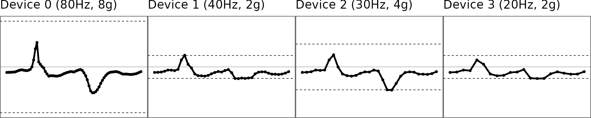

Step-by-step illustration of MIMS-unit algorithm
Qu Tang
Oct 12, 2019
Source:vignettes/conceptual_diagram.Rmd
conceptual_diagram.RmdHere we demonstrate the scripts used to reproduce the diagram.
Original data
We use a one-second segment of raw accelerometer signal (80 Hz, 8g) from a random subject doing jumping jack as test data. The other signals with different sampling rates and dynamic ranges are simulated via the simulated_new_data() function. The step-by-step illustration has been presented as Figure 1 in the manuscript.
df = MIMSunit::conceptual_diagram_data start_time = df[[1,1]] stop_time = start_time + 1
Illustration of the original signals
figs = df %>% group_by(.data$NAME) %>% MIMSunit::clip_data(start_time = start_time, stop_time = stop_time) %>% group_map( ~ MIMSunit::illustrate_signal( .x, title = .y, line_size = 1, point_size = 1, range = c(-.x$GRANGE[1], .x$GRANGE[1]) ) + theme(plot.margin = unit(c(0, 0.01, -0.2, -0.2), "line")) ) gridExtra::grid.arrange(grobs = figs, nrow = 1)

- Dashed lines represent the dynamic range region. Beyond this line, signals will be maxed out as shown in Device 1-3.
Interpolation: Upsampling to 100Hz
The second step is to regularize the sampling rates of the signals and upsample the signal to 100 Hz, because we have shown extrapolation (see next section) works better and more robustly at 100 Hz than lower sampling rates.
Illustration of the interpolated signals
figs = interp_df %>% group_by(.data$NAME) %>% MIMSunit::clip_data(start_time = start_time, stop_time = stop_time) %>% group_map( ~ MIMSunit::illustrate_signal( .x, title = .y[[1]], line_size = 1, point_size = 1, range = c(-.x$GRANGE[1], .x$GRANGE[1]) ) + theme(plot.margin = unit(c(0, 0.01, -0.2, -0.2), "line")) ) gridExtra::grid.arrange(grobs = figs, nrow = 1)
Extrapolation: Restoring “maxed-out” samples
The third step is to restore the samples that are maxed out due to low dynamic range for signals of intensive movement. Please check the manuscript for the details of the extrapolation algorithm.
figs = interp_df %>% group_by(.data$NAME) %>% MIMSunit::clip_data(start_time = start_time, stop_time = stop_time) %>% group_map( ~ MIMSunit::illustrate_extrapolation( .x, title = .y, dynamic_range = c(-.x$GRANGE[1], .x$GRANGE[1]), show_neighbors = TRUE, show_extrapolated_points_and_lines = TRUE ) + theme(plot.margin = unit(c(0, 0.01, -0.2, -0.2), "line"))) gridExtra::grid.arrange(grobs = figs, nrow = 1)